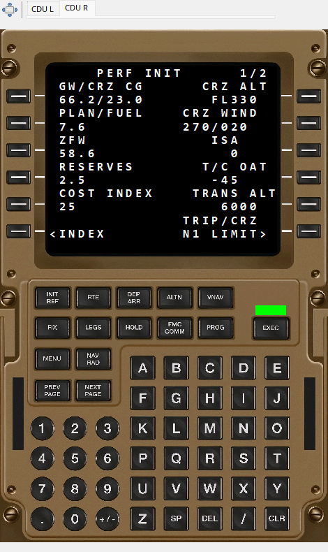

Ilustracja interfejsu z danymi demonstracyjnymi. To nie jest zapis rzeczywistego lotu.
Ekran pokazuje tekst zapisany z B777 CDU, wraz z dostêpnymi kolorami, ma³ym/du¿ym fontem i kontrolkami. Lew¹ i praw¹ jednostkê wybiera siê zak³adkami; ka¿da mo¿e mieæ inn¹ stronê. Klawisze na tle s¹ elementem prezentacji i nie s³u¿¹ programowaniu FMS.
Przewijanie wybiera ostatni ekran znany do wskazanej chwili. D³u¿szy brak zmian treœci mo¿e byæ prawid³owy, jeœli zapis obejmuje tylko zmiany. Dane INIT/PERF/LEGS s¹ treœci¹ historyczn¹, nie automatycznie wyliczonym planem mapy. Brak jednej jednostki nie upowa¿nia do skopiowania stanu drugiej. Dostêpnoœæ B777 i szczegó³ów formatowania zale¿y od wersji SDK. Oba poni¿sze zrzuty pokazuj¹ osobne jednostki w od³¹czonym panelu.
